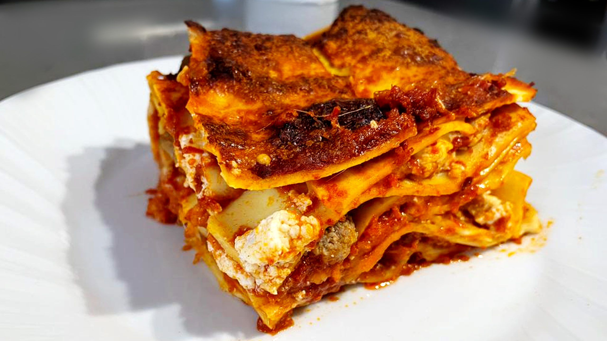

Lasagna

La ricetta facile per preparare le lasagne al ragù, regine dei pranzi della domenica in famiglia, saporite e sostanziose.
Le lasagne alla bolognese sono un primo piatto classico e buonissimo della cucina italiana, uno dei simboli per eccellenza delle riunioni familiari a casa di nonni e parenti. Sono facilissime da fare, si preparano con un delizioso ragù di carne che conquisterà tutti quanti!
Ingredienti
- sfoglia pronta per lasagne
- besciamella
- formaggio grattugiato
Preparazione
- Cominciamo la preparazione del ragù alla bolognese rosolando la pancetta da sola. Teniamola sul fuoco a fiamma alta fino a quando non si sarà sciolto un po’ di grasso.
- Aggiungiamo olio d’oliva, sedano, carota e cipolla tritati e mescoliamo con un mestolo. Cuociamo il soffritto per qualche minuto.
- Sgraniamo un pochino la carne tritata mentre la versiamo in pentola, e mescoliamo per distribuirla in modo uniforme. Dopo 5 minuti, sfumiamo con il vino e continuiamo la cottura per altri 5 minuti.
- ...